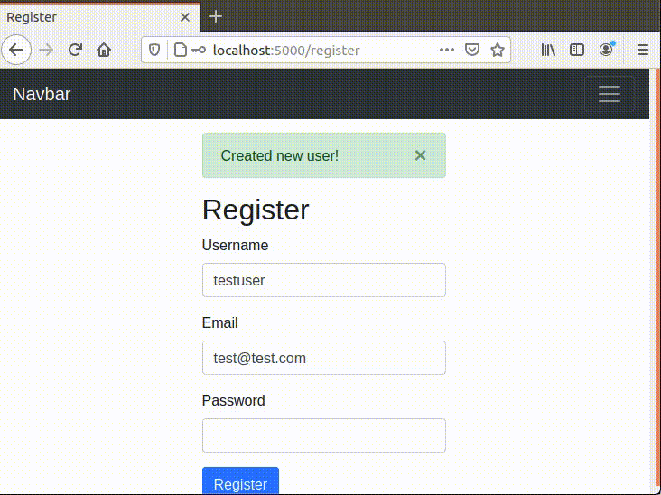
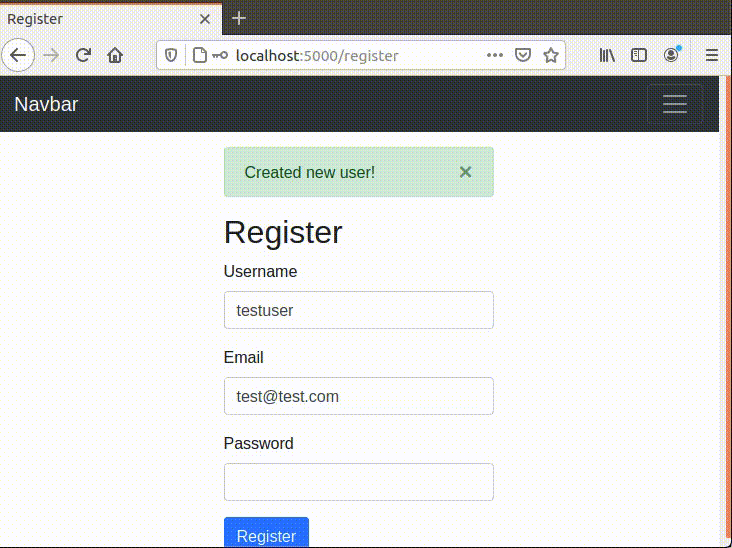
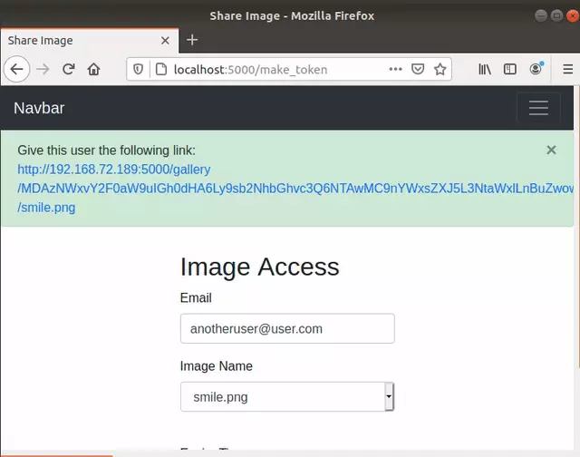
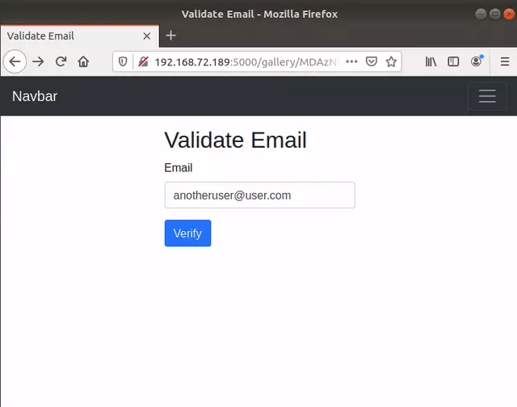
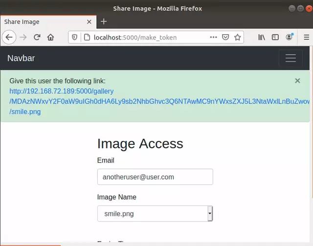
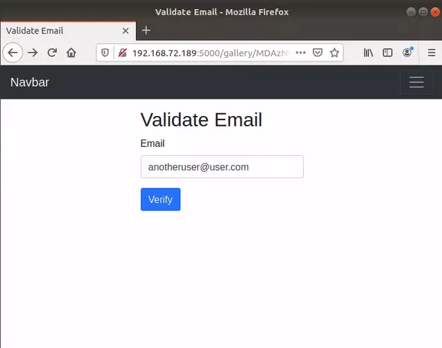

I created this project to explore some different alternatives to the popularized JWT tokens. I had worked on an 8-month long capstone project in school where we used JWT tokens to ensure a user is who they say they are. During this project my partner and I realized some of the issues that exist with JWT tokens (ex: the algorithm used for encryption within these tokens can be changed and sometimes applications can treat JWT tokens with an algorithm of type "none" as valid causing issues) and this made me curious about what other token based authentication methods exist, this lead me to Google Macaroons.
Google Macaroons don't let the user change the algorithm type being used and they enable users to add caveats to the tokens to reduce the scope of the token based on their needs. In this project I build a simple web application that lets user register, login, upload photos and share access of those photos with users who are not registered for the web app using only their email address.
Project
Images


 

 


